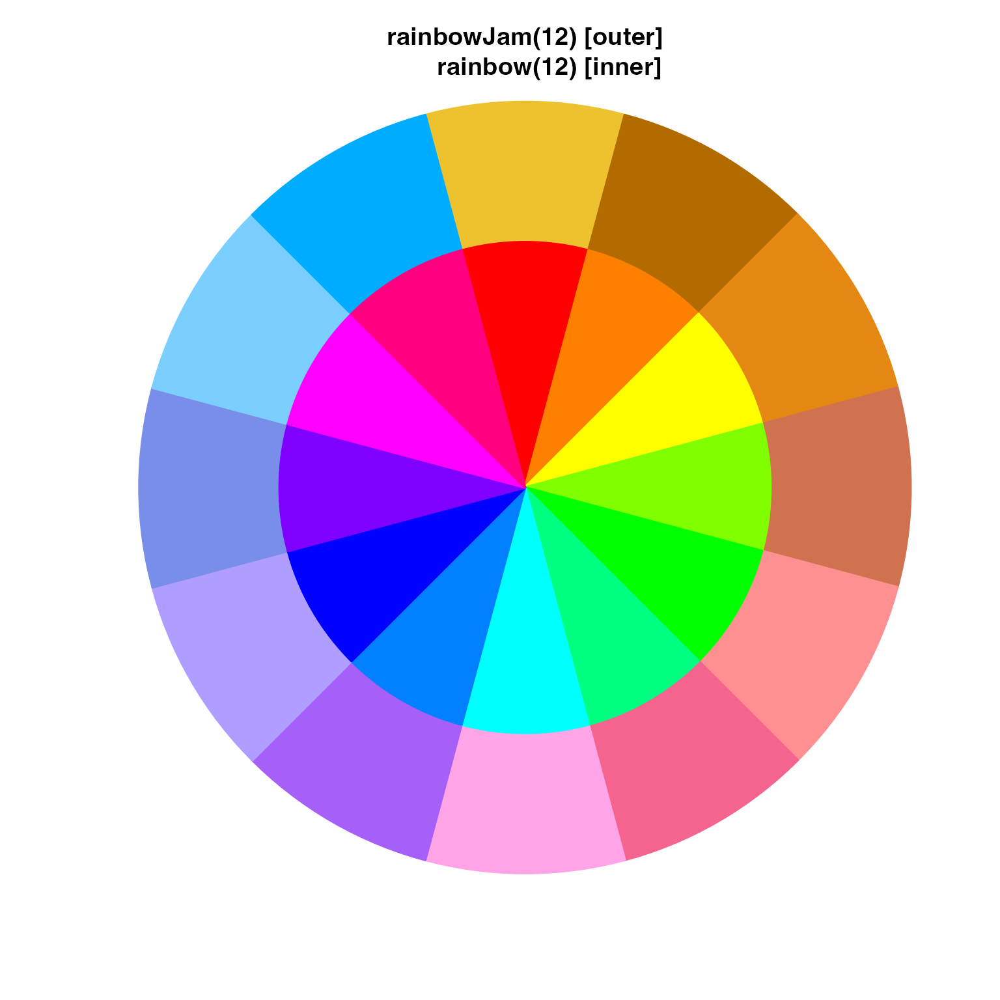
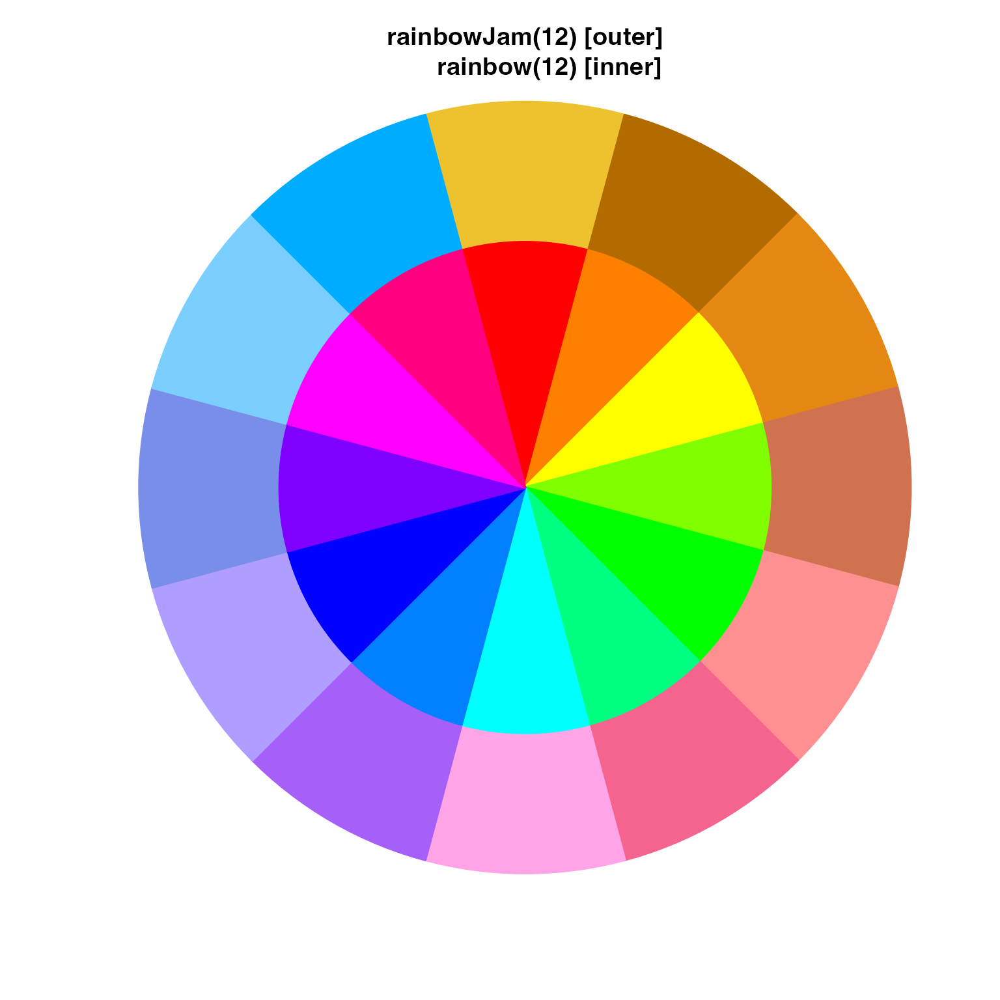
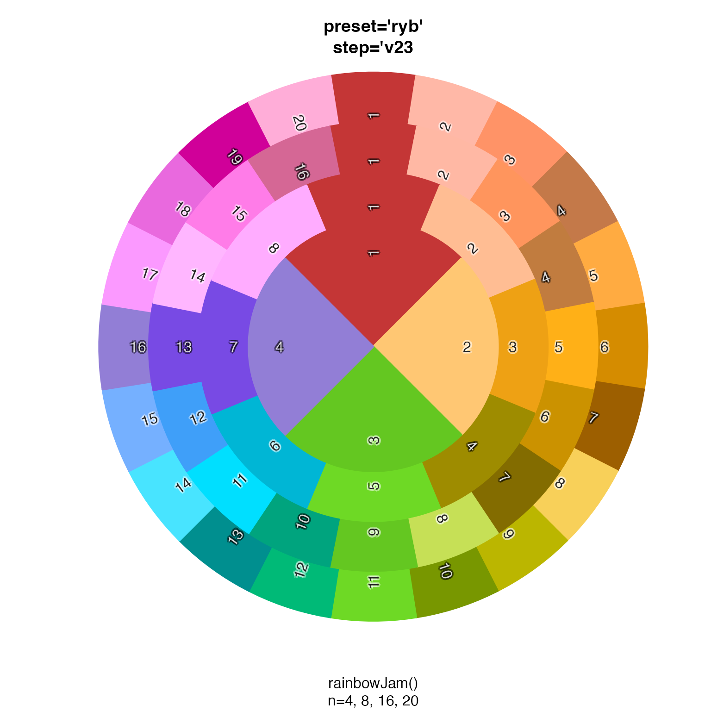
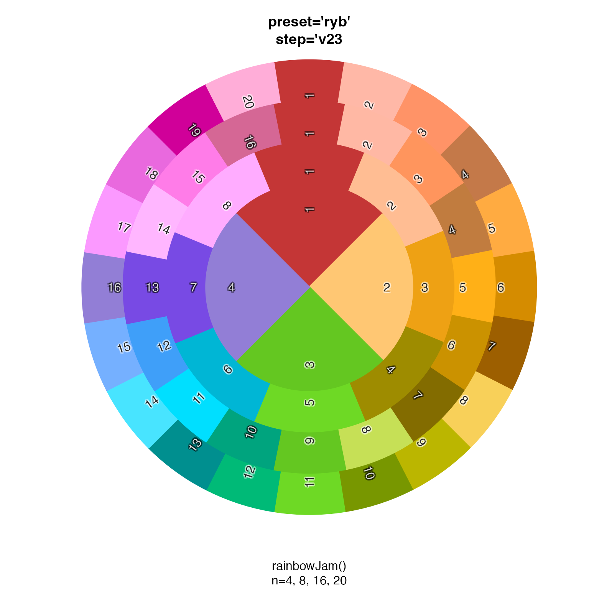
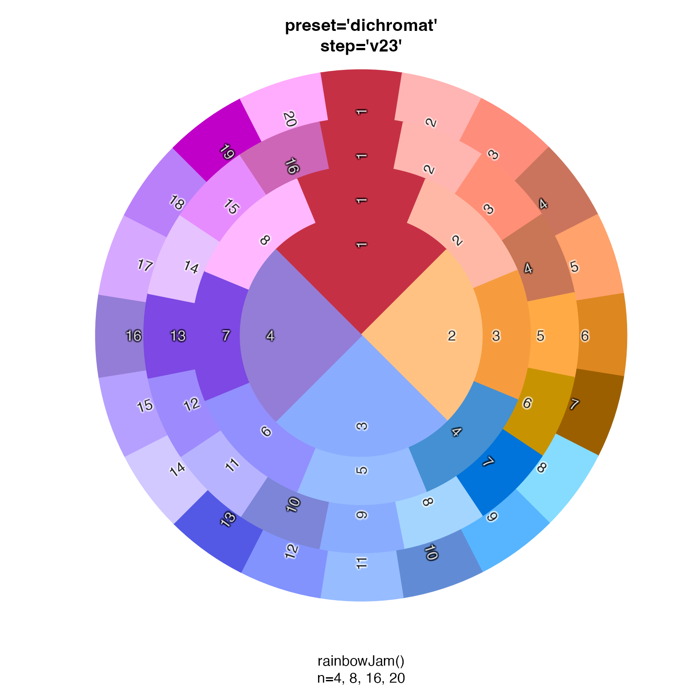
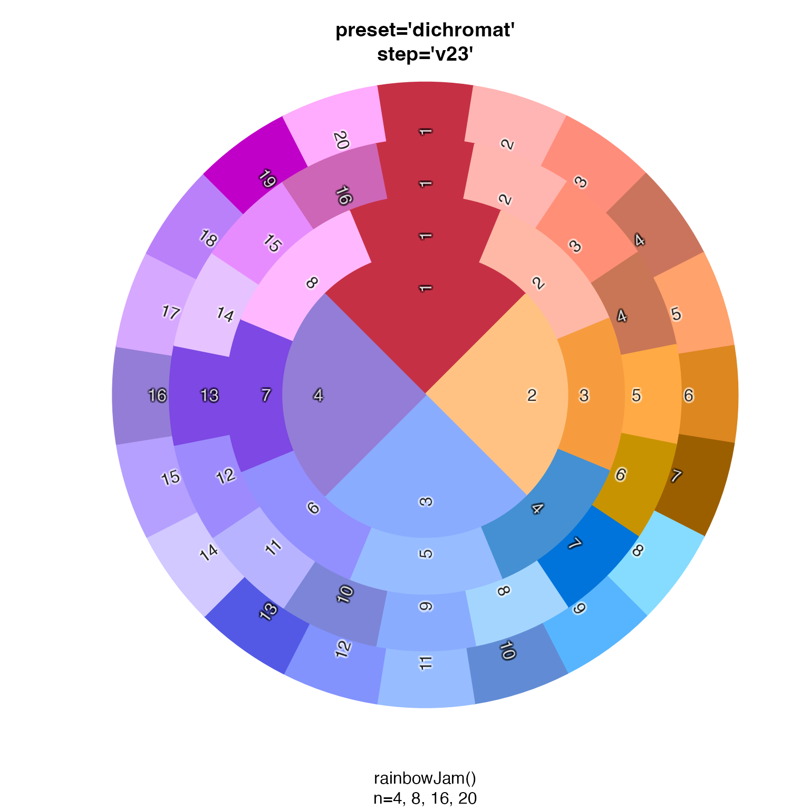

Show colors spread around a pie chart
Usage
color_pie(
colors,
border = colors,
lwd = 2,
radius = 1.1,
label_radius = radius * 0.65,
add = FALSE,
init.angle = NULL,
clockwise = TRUE,
...
)Arguments
- colors
vectorof R colors.- border
vectorof R colors used to draw a border around each pie wedge. By default it uses inputcolors.- lwd
numeric value used to define the line width of the pie wedge borders.
- radius
numeric value representing the radius of the overall pie chart, where
radius=1represents the default radius used bygraphics::pie(). The default isradius=1.5in order to use more of the output plot size.- label_radius
numeric value indicating the radius used for labels, intended to allow labels to appear inside each pie wedge.
- add
logical indicating whether to draw the pie chart onto the existing plot device, without creating a new plot.
- ...
additional arguments are passed to
graphics::pie().
Details
This function simply displays colors in a pie chart format.
If the input is a list, each list is used to produce
layers of a pie chart, in order to help compare colors
from each vector in the list.
See also
Other colorjam display:
combine_alphas(),
showDichromat()
Examples
color_pie(rainbowJam(15, nameStyle="none"),
sub="rainbowJam(15)")
 n <- 12;
color_pie(list(
rainbowJam(n),
rainbow(n)),
main="rainbowJam(12) [outer]\n rainbow(12) [inner]")

n <- 15
color_pie(list(
rainbowJam(n),
colorspace::rainbow_hcl(n, c=85)),
main="rainbowJam(15) [outer]\nrainbow_hcl(15) [inner]")
n <- 12;
color_pie(list(
rainbowJam(n),
rainbow(n)),
main="rainbowJam(12) [outer]\n rainbow(12) [inner]")

n <- 15
color_pie(list(
rainbowJam(n),
colorspace::rainbow_hcl(n, c=85)),
main="rainbowJam(15) [outer]\nrainbow_hcl(15) [inner]")
 rainbow_list <- lapply(4*c(5,4,2,1), function(n){
rainbowJam(n, preset="ryb", step='v23', nameStyle="n");
});
color_pie(rainbow_list,
main="preset='ryb'\nstep='v23",
sub="rainbowJam()\nn=4, 8, 16, 20")

rainbow_list2 <- lapply(4*c(5,4,2,1), function(n){
rainbowJam(n, nameStyle="n");
});
color_pie(rainbow_list2,
main="default settings",
sub="rainbowJam()\nn=4, 8, 16, 20")
rainbow_list <- lapply(4*c(5,4,2,1), function(n){
rainbowJam(n, preset="ryb", step='v23', nameStyle="n");
});
color_pie(rainbow_list,
main="preset='ryb'\nstep='v23",
sub="rainbowJam()\nn=4, 8, 16, 20")

rainbow_list2 <- lapply(4*c(5,4,2,1), function(n){
rainbowJam(n, nameStyle="n");
});
color_pie(rainbow_list2,
main="default settings",
sub="rainbowJam()\nn=4, 8, 16, 20")
 rainbow_list3 <- lapply(4*c(5,4,2,1), function(n){
rainbowJam(n, preset="dichromat", step="v23", nameStyle="n");
});
color_pie(rainbow_list3,
main="preset='dichromat'\nstep='v23'",
sub="rainbowJam()\nn=4, 8, 16, 20")

rainbow_list3 <- lapply(4*c(5,4,2,1), function(n){
rainbowJam(n, preset="dichromat", step="v23", nameStyle="n");
});
color_pie(rainbow_list3,
main="preset='dichromat'\nstep='v23'",
sub="rainbowJam()\nn=4, 8, 16, 20")
